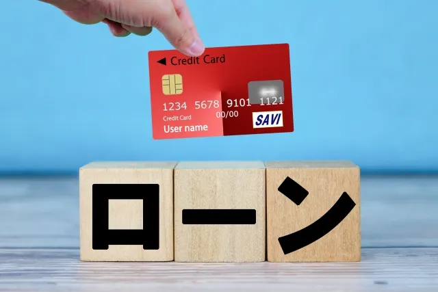
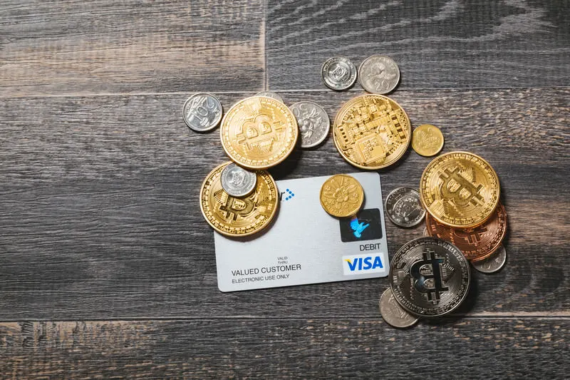
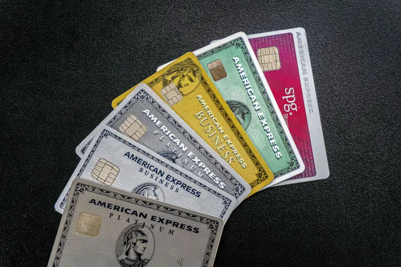
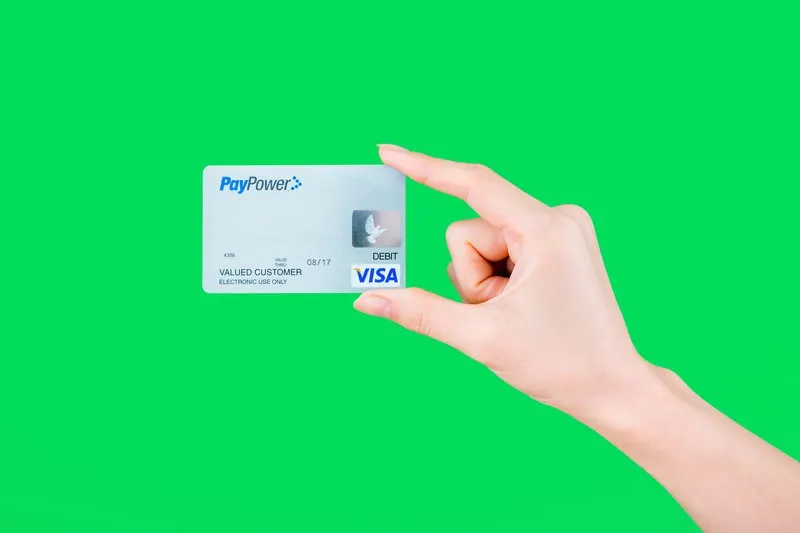

カードローンの審査基準と審査に通らなかった時の対処法【徹底解説】


こんな人におすすめ
- 審査に通らずカードローンが利用できない
- 審査落ちした原因が分からない
- 審査に通るためのポイントを知りたい
カードローンを利用したいけど、審査に通らず困っている人もいるのではないでしょうか。
なぜ審査落ちしたのか原因がわからないと、また申し込んでも通るかどうか心配です。
理由によっては、対策を講じることで再度申込みできる場合もあります。
カードローン審査に通るためには、申込前に審査基準を調べて通る見込みがあるか確認することが大切です。
審査に通りやすくなるポイントをおさえて、カードローンを利用しましょう。
この記事では「カードローン審査のポイントや審査に落ちた場合の対策」について、ファイナンシャルプランナーの「まつお」が解説します。
この記事でわかること
- 審査に必要な書類や条件
- カードローンの審査内容
- 審査に通りやすくなる方法
- 申し込み方と流れ
- 審査に通らなかったときの対処法
カードローンの審査基準について知ろう

そもそも、利用するための条件や、カードローンを利用するにはどのような手続きが必要なのかわからない人も少なくありません。
はじめに、カードローンを利用するために用意しなければならないものや利用条件、審査に通過しなかったらどうしたらよいかを解説します。
カードローン審査とは
カードローンを利用するには、必ず金融機関の審査に通過する必要があります。
審査に問題がなければ、返済能力に応じて利用限度額が設定され、その範囲内で利用が可能です。
審査基準は公開されておらず、審査内容も金融機関ごとに異なり詳細はわかりません。
しかし、大まかな審査基準は共通しています。
審査に必要な書類や条件
カードローンの申し込みをするときは本人確認書類が必要です。
金融機関は、本人確認書類によって、申込者が本当に本人であるかを確認します。
本人確認書類には、以下のようなものが必要です。
- 運転免許証
- パスポート
- 健康保険証
- 住民票
- マイナンバーカード
なお、一定額以上の金額を借りるときは、収入証明書類が必要になることがあります。
収入証明書が必要となる金額は貸金業法で決められており、消費者金融系や信販系と銀行系カードローンでは異なるため注意が必要です。
消費者金融系と信販系では貸金業法が適応されるため、収入証明書の提出条件について下記のルールがあります。
- 借入額が50万円を超える場合
- 他社との借入総額が100万円を超える場合
他社の借入総額には、キャッシング枠での利用額も含まれるので確認しておきましょう。
カードローンの審査で調べられていること

カードローンは、返済能力がない人には貸してくれません。そのため、返せる見込みがあるかどうかを審査によって判断しているのです。
審査では以下の項目を調べています。
返済能力があるかの確認
カードローンは返済能力があり、きちんと返してくれる人かどうかを見極めた上でお金を貸してくれます。
返済能力とは「毎月継続的に返済を続けられる」ことが前提です。
 まつお
まつお返済能力がないと判断されれば審査には通りません。
そのため、安定した収入がない人や無職の人などは借りにくくなることがあります。
借りすぎていないかの確認
貸金業事業者は、申し込み者が「総量規制に該当していないか」を確認することが義務付けられており、該当すれば審査には通りません。
「総量規制」とは、借金に苦しむ人を増やさないため、貸金業法で「個人の借入総額は年収の3分の1まで」と決められた基準のことです。
たとえば、年収300万円の人が借りられる上限は、年収の3分の1にあたる100万円となります。
A社で80万円を借りていた場合、追加でB社から50万円を借りたいと思っても、100万円が総量規制の対象となるため、20万円しか追加の借り入れができません。
このように「他からの借り入れも含めて3分の1」なので注意が必要です。
ただし、借入の中でも、総量規制の対象にならないものもあります。
- 不動産ローンやそのためのつなぎ融資
- マイカーローン
- 高額医療費を支払うための貸付
上記は、年収の3分の1を超えていても、新たにカードローンを組むこと自体は可能です。
まつおこれらの借入状況も含めて総合的に返済能力が判断されます。
総量規制対象外のローンであっても、借入額が多ければ審査に影響が出る可能性があるでしょう。
信用情報に問題がないかの確認
信用情報とは、ローンやクレジットカードの取引に関する履歴です。
信用機関を通じて、これまでのローン利用の有無や返済に問題がなかったかなどの情報を調べることで、お金を貸せる人物かどうかを見極めます。
過去5年以内に延滞の履歴があれば、返済能力に問題があると判断されることがあるので注意が必要です。
まつお過去5年の状況が審査に影響することは覚えておきましょう。
ただし、延滞などの履歴があってもそれだけで審査に通らないということはなく、あくまで貸金業事業者の判断によります。
カードローンの審査基準
カードローンの審査基準は公開されておらず、貸金業事業者によって異なります。
しかし、チェックされる項目はほとんど同じです。そこに独自の審査基準をプラスして、最終的な判断がなされます。
主な審査基準を見ていきましょう。
収入状況
年収は返済能力に直接関わるので必ず確認される項目です。
ただし、年収が高ければ審査が有利になるという訳ではありません。重要なのは安定性と収支バランスです。
例えば、フルコミッションで働いている人は、その年の年収が高くても翌年は下がる可能性があります。
まつお収入よりも支出が多い人は、収入が高くても審査には通りにくいです。
年収が低くても、勤務先や雇用形態が安定していれば審査に通りやすく、安定した勤務先であっても勤続年数が短い人は、審査が通りにくいことがあります。
住宅に関する状況
住宅にかかる支払い額を確認されます。
収入に対する家賃の割合や、住宅ローンの返済があるかどうかです。
同じ場所に長く住んでいる人ほど生活が安定しているとみなされ、プラスの判断材料となることもあります。
職業の状況
職業は返済能力を判断する上で重要な要素です。
公務員や正社員は、パートやアルバイトに比べて安定しているため有利になる傾向があり、会社の規模も審査に影響します。
ただし、非正規社員だからと言って審査に通らないわけではありません。
勤続年数
勤続年数が長い人は、審査に通りやすい可能性があります。
辞めるリスクが低く、今後も安定的に給料がもらえると判断されるからです。
まつお勤務年数の長さは信頼度がアップします。
自分の正確な勤続年数を確認しておきましょう。
他社からの借入状況
他社からの借り入れ状況は審査に大きく影響します。
他の借り入れがあるから審査に通らないというわけではなく「総量規制」に該当しないかどうかが重要です。
借り入れ総額が年収の3分の1近くになっている場合は、返済不能になりやすいと判断され、審査に通らない可能性が高くなります。
これまでの返済実績
これまでの借り入れをきちんと返済していれば問題ありませんが、延滞があると審査に通りにくくなります。
延滞の履歴は最長5年間残るため、その間は審査に通りません。
一度審査に落ちた場合は、今後5年間は支払いを忘れないように気をつけましょう。
カードローンの審査に通らない理由

カードローンの審査基準は公開されていないため、確実に通る方法はありません。
しかし、審査に通らない人はほとんど同じ理由であることがほとんどです。
よくある理由を5つ紹介します。
信用情報に問題がある
過去にカードローンを利用したことがあるというだけで、審査に影響があると思っている方もいます。
しかし、きちんと返済日までに返済していれば、問題はなく審査に通りにくいということはありません。
問題なのは、返済ができず返済日までに返済できないことや、督促に応じなかったなどです。
まつお「要注意人物」扱いになり、信用情報に傷がつきます。
特に、過去に自己破産や債務整理などを行ったことがある方は、ほぼ審査には通りません。
信用情報には奨学金の返済やクレジットカード、携帯電話料金の支払い延滞も含まれるので注意しましょう。
返済能力を超えた借入を希望している
返済比率が高すぎると、返済能力が低いと判断される可能性が高いです。
返済比率とは、年間の返済額が年収に占める割合のことで、カードローンだけでなく住宅ローンやカーローンなども含まれます。
すべての返済額を合わせて返済比率が年収の35％を超えると、審査の通過が難しくなるので注意が必要です。
返済比率が高すぎると返済能力がないと判断される可能性があるため、借り入れは収入と支出のバランスを考え、無理なく返済できる金額にしましょう。
ただし、一度審査に落ちたとしても、借入希望額を下げれば審査に通ることもあります。
同時に複数の申し込みをしている
カードローンの審査が通らなかったときのために、複数のカードローンへの申し込みを考える方もいます。
しかし、同時に複数の申し込みをすると、審査に落ちる原因となる可能性があるため注意が必要です。
信用情報には他社への申し込みの記録も残っています。
短期間に複数のカードローンの申込をすれば、返済能力があったとしてもお金に困っているとみなされ、要注意人物だと判断されることも少なくありません。
借り入れは、1社にしたほうが審査に通りやすくなります。
申し込み内容に不備がある
特に多いのが、申し込み時に提出する必要書類の不備です。
たとえば、引っ越しをしたのに住所変更をしておらず、本人確認書類の住所と現住所が異なることがあります。
このような時は、追加書類を提出するまで審査がストップしてしまうのです。
まつお故意でなくても申込内容に誤りがあれば審査に通りません。
審査に時間をかけないためにも、必ず正確な情報を記入するようにしましょう。
安定した職業についていない
あなたの仕事での収入が不安定だと判断されれば、借入は難しくなることがあります。
きちんと返済できる方かどうかの判断には「安定した収入が継続的に見込めること」が重視されるためです。
フリーランスや派遣社員などは、収入が不安定だという理由で審査に落ちる可能性が高くなります。
「公務員は審査に通りやすい」と言われるのは、倒産するリスクが少なく収入が安定しているためです。
審査に通らなかった場合の対処法

カードローンの審査に通らなかったとき、すぐに他のカードローンに申込をする方もいますが、短期間に申し込むと余計に審査に通りづらくなってしまいます。
審査に落ちてしまったときは、次回の申し込みに向けて対処しましょう。
信用情報を確認する
あまり知られていませんが、信用情報機関に申請すれば自分の信用情報の開示請求ができます。
信用情報機関は以下の3つがあり、費用は1回あたり1,000円程度です。
- JICC（株式会社日本信用情報機構）
- CIC（株式会社シー・アイ・シー）
- KSC（全国銀行個人信用情報センター）
扱う情報は次のとおりです。
| 信用情報機関 | 取扱情報 |
|---|---|
| JICC（株式会社日本信用情報機構） | 消費者金融の情報など |
| CIC（株式会社シー・アイ・シー） | クレジットカードや携帯代の情報など |
| KSC（全国銀行個人信用情報センター） | 銀行の情報など |
過去の延滞や借入の合計額、月々の返済額が年収の35%を超えていないかを確認しましょう。
まつおもし、信用情報に問題があれば、改善することで審査に通る可能性が高くなります。
記録は6か月保存されるため、審査に落ちてから最低でも6か月は空けてから申し込んでください。
できるだけ借入額を減らしておく
複数からの借入があれば、返済能力に問題があると思われる可能性があります。
そのため、できる限り借入額を減らしましょう。
年収3分の1を超える借り入れはできないため、借入額が多すぎると審査に通りません。
また「いくらまでなら借りられるか」を把握しておくことも重要です。
その上で、今の借り入れを延滞せずに返済を続ければ、審査に通りやすくなります。
クレジットカードでキャッシングする
それでも、次の申し込みまで待てないとい方は、クレジットカードの「キャッシング枠」を利用してお金を借りることも可能です。
ショッピング枠とは別に限度額が設定されているので、設定金額までは借りられます。
しかし、その分毎月の支払額は増えるため、返済ができる範囲で借りなければ、次回の審査に影響する可能性があるので注意が必要です。
おまとめローンに申し込む
おまとめローンは、 複数の金融機関からのローンを1つの借入先にまとめることです。
新たな金融機関からの融資を受けて他社の借り入れを全て清算することで、借入先を1社にまとめます。
ひとつにまとめることで、それまでよりも月額返済額が低くなり返済負担をおさえられる場合もあるので、検討してみるとよいでしょう。
おまとめローンは総量規制の「例外貸付け」に分類される契約となり、総量規制の対象外です。
そのため、審査に通れば年収の3分の1を超える金額を借りられることがあります。
カードローン審査の申し込み方法と流れ
次に、カードローンの申し込みから審査の流れについて解説していきます。
カードローンの審査は一般的に以下のような流れです。
1.カードローンに申し込む
カードローンの申し込みには、おもに次の4つの方法があります。
- インターネット申込
- 電話での申込
- 自動契約機での申込
- 店舗での申込
来店が不要で、誰にも見られないメリットがあるため、インターネット申込がおすすめです。
24時間申し込みが可能で、スマホからも簡単に手続きできます。
中には、手続きのみをWebで行い、借りる時は店舗におかなければならない場合もあるので注意が必要です。
できれば「Web完結型」の申し込みができる会社を選びましょう。
2.必要書類を提出する
申し込みが終わったら必要書類を提出します。
一般的に、カードローンの審査の必要書類は「本人確認書類」と「収入証明」です。
郵送以外にも、パソコンやスマホから送信できることが多いので、スピーディーな手続きができます。
| 書類の種類 | 代表的な提出書類 |
|---|---|
| 本人確認書類 | 運転免許証パスポート保険証 |
| 収入証明 | 源泉徴収票市民税・県民税額決定通知書所得証明書確定申告書給与明細書 |
3.審査および在籍確認
仮審査は、申込情報や信用情報で申込者の返済能力や信用を判断し、融資基準を満たしているかを確認します。
一方、本審査は、在籍確認や必要書類の確認など「事実確認」をするのが一般的です。
まつおなお、カードローン会社によって仮審査と本審査の違いがないこともあります。
書類審査が終われば、勤務先にカードローン会社から電話があり、本当に記入した勤務先に在籍しているかの確認が行われます。
在籍確認の電話は、個人名でかかってくることが一般的なので、あなたがカードローンに申し込みした事実が発覚する可能性は低いので安心してください。
4.契約完了
在籍確認が完了すると審査結果の連絡が電話やメールで来ます。
契約内容を確認し、限度額や金利などの貸付条件に問題なければ契約手続きを行い、すぐに借入できる状態になるのが一般的です。
借入方法は会社によって異なりますが、次のような方法があります。
- 銀行振込で入金してもらう
- カードを発行してATMで引き出す
- スマホアプリを使ってATMで引き出す
借入方法を選ぶときは「口座にお金を入れたいのか」「手元にすぐ現金が欲しいのか」で選びましょう。
口座に入金したければ銀行振込で、すぐに現金が欲しければ、ATMからの引き出しがおすすめです。
借入方法によって手数料などが異なるので、確認しておきましょう。
【Q&A】カードローン審査に関するよくある質問
カードローンを利用するにあたって、質問の多い事項をまとめましたので、利用する際の参考にしてください。
審査に申し込む前に用意するものはありますか？
カードローンに申し込むときに必要な書類は、本人確認書類と収入証明書類です。
本人確認と収入がわかる書類を用意しましょう。
免許証やマイナンバーカードなどはすぐにコピーができますが、住民票や収入証明は事前に取り寄せが必要なので早めの準備をおすすめします。
アルバイトやパートでも審査に通りますか？
審査に通るかどうかはローン会社によります。
申し込み条件に「正規雇用者のみ」などの文言が記載されている場合は申し込み自体ができません。
とくに記載がなければ、アルバイトやパートでも申し込むことが可能です。
ただし、多くのカードローンは、申込条件に「安定した収入があること」という記載があります。
たとえば、日雇いで収入が安定しない方や、毎月の収入に変動がある場合は、審査に通らないことがあるので注意が必要です。
審査に通らなかったら別のカードローンを申し込めますか？
すぐに申し込んでも、審査に通らない可能性があります。
審査に通らなかった原因を調べて、最低でも６か月は空けてから次の申し込みを行いましょう。
借入先が多い場合でも審査は通りますか？
借入先は複数あっても構いませんが、借り入れ総額が年収の３分の１までしか借り入れができません。
そのため、いくらまでなら借りるられるかの確認をおすすめします。
なお、おまとめローンなら3分の1を超えても借りられる可能性があるので、相談してみましょう。
カードローン審査で最も重視される条件は？
基準はローン会社によって異なりますが、一般的に審査で重視されるのは「返済能力があるか」です。
具体的には以下のような事項です。
- 過去に延滞したことがないか
- 借りようとしている収入に対して多すぎないか
- 安定収入があるか
当てはまっていないか確認してみましょう。
カードローン審査はポイントをおさえればOK

カードローンは長期的に無理なく返済ができるように設計されている商品です。
しかし、返済ができないと判断されれば、審査に通りません。
まずは、自分の借り入れ状況と、収支のバランスを把握することからはじめましょう。
審査基準や審査に通りやすくなるポイントを押さえておけば、不安を感じることはありません。
本記事で紹介した項目を参考に、借入ができそうかどうか確認してみてください。
採用・人事やAI活用のご相談を受け付けています
記事の執筆、採用支援、AI導入支援など、まずはお気軽にご相談ください。
ご相談はこちら